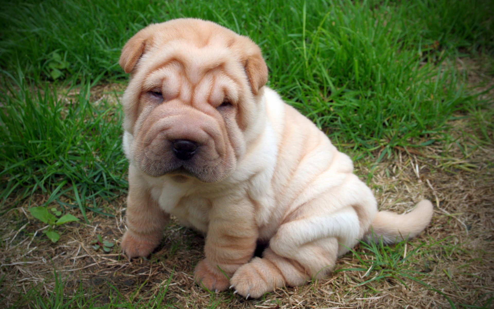
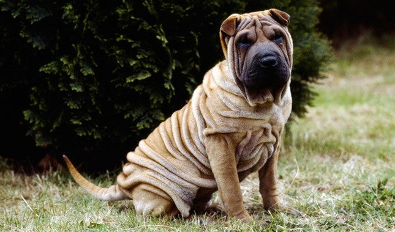

Miniature Shar Pei

origin
China
size
Small
color
Others
type
Purebred
breed group
Non-Sporting (AKC)
character
Hypoallergenic
temperament
Confident
Independent
Playful
Adaptable
height
17 inches and under (43 cm)
weight
85-110 pounds (38–50 kg)
geography
Asia
overview
Miniature Shar Peis have a shoulder height up to 43 cm (17 in) and weigh up to 17 kg (38 lbs). Like their larger brethren, they are known for their blue-black tongue and profusely wrinkled head, neck, and shoulders. They have large heads with small, highly set ears, and thick tails which curl over the back. Miniature Shar Peis have large, wide muzzles, and small, sunken eyes. Puppies have wrinkles all over their bodies.
history
This breed goes back to around 200 BC in China where it was a cross of relatives to the Chow Chow, Mastiff, Terrier, and Bulldog. Over the years this breed became larger as the mastiff influence began to come out. What many people do not know is that the Miniature actually represents a more accurate build of the breed's true dimensions. Until Shar Pei became AKC recognized, and the larger standard was adopted, those breeding what are now known as Miniature Shar Pei were actually breeding the more original size. This was recently discovered through the finding of the gene responsible for the miniature size. Before this many thought that the smaller sized dogs were unhealthy or considered to be mistakes. Today Miniature Shar Pei breeders believe that this breed is special unto itself and worthy of approval by the American Kennel Club.
Photo Gallery


